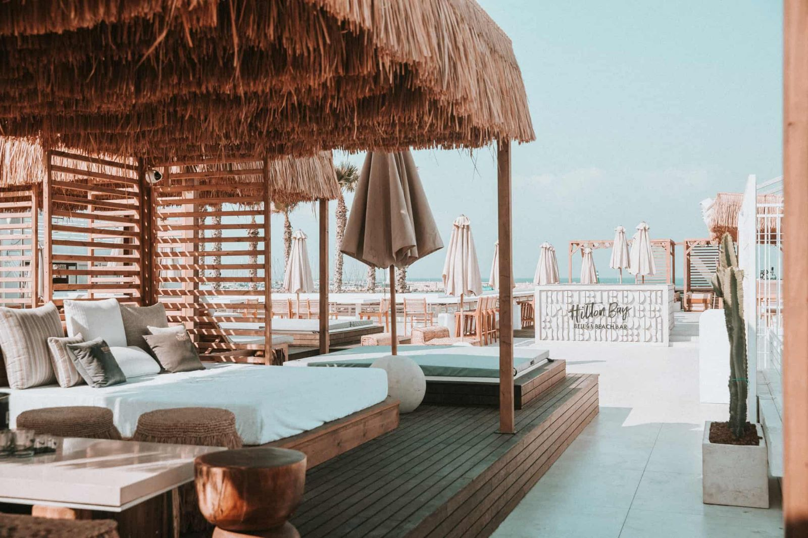
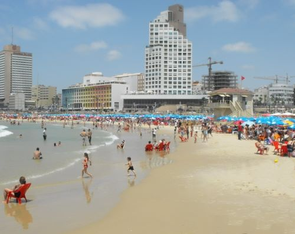
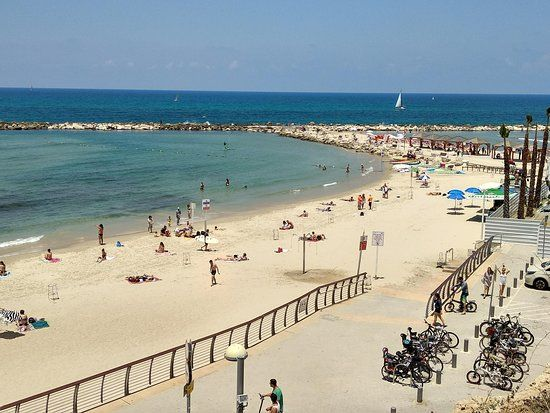
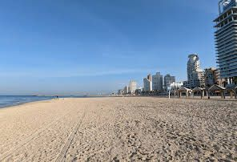

שמו של החוף, בעל האופי הצעיר, מעיד על מיקומו. החוף ממוקם במרכז כביש השרות שבין חוף 'מציצים
למרינה. בחוף גישה מיטבית לציבור בעלי מוגבלויות, הבאים ליהנות מהחוף ולבצע פעילויות ספורט ימי,
וזהו החוף הנגיש ביותר לנכים בארץ. חלקו הצפוני של החוף הוא קטע חוף המותר לכניסת כלבים (לפי שילוט).
החוף הדרומי מוכרז כחוף הגולשים מס' 1 בארץ: כיום הותקנו בו פנסי תאורה לגלישת לילה,
כשהים גלי התאורה דולקת וכולם מוזמנים לבוא ולהנות

בוגרשוב
החוף ממוקם במרכז הטיילת התל אביבית
נגיש בתחבורה ציבורית, וסביבו מגרשי חניה בתשלום. בחוף נמצאת האנדרטה לזכר הספינה אלטלנה

גורדון
החוף הצפוני ביותר של רצועת החוף המרכזית בעיר, סמוך למרינה התל אביבית. החוף משרת תיירים
מהמלונות הסמוכים, תושבים ותיקים הבאים לבצע פעילות ספורט בשעות הבוקר וכן את הקהל הרחב

גאולה
החוף ממוקם בחלקה הדרומי של הטיילת התל-אביבית, בסמוך לכרמלית, לשוק הכרמל ולגן צ'ארלס קלור.
הקטע הדרומי של החוף (מצפון לדולפינריום) מיועד לספורט ימי, ובמקום פועל מועדון גלישה. החוף זכה
לכינוי "חוף התופים" בשל להקות מתופפים הנאספות סביב הדולפינריום בימי שישי.
